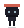
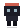
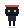
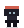
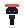

FEZ Buddy
菱形に近い頭。冠のような帯。ペット相棒。

24px ★32
48
24px で「忍者」と「欲しい」を同時に見る。FEZ / Crossy / cozy indie 寄り、retro すぎない。 完成度不要・超ラフ。採用後に動きで完成させる。
菱形に近い頭。冠のような帯。ペット相棒。

24px ★がっつり2頭身。ちび忍者シルエット最強。

24px ★梨形フード。暖かい赤。NPC お友達感。

24px ★前のめり。太い足場。端に住んでる。

24px ★記号最短。忍者は最速、愛着は要検証。

24px ★
0.3秒テスト: 24px だけ見て「忍者？」「欲しい？」「相棒？」
README: README.md — 採用案を教えてください（組み合わせ可）。